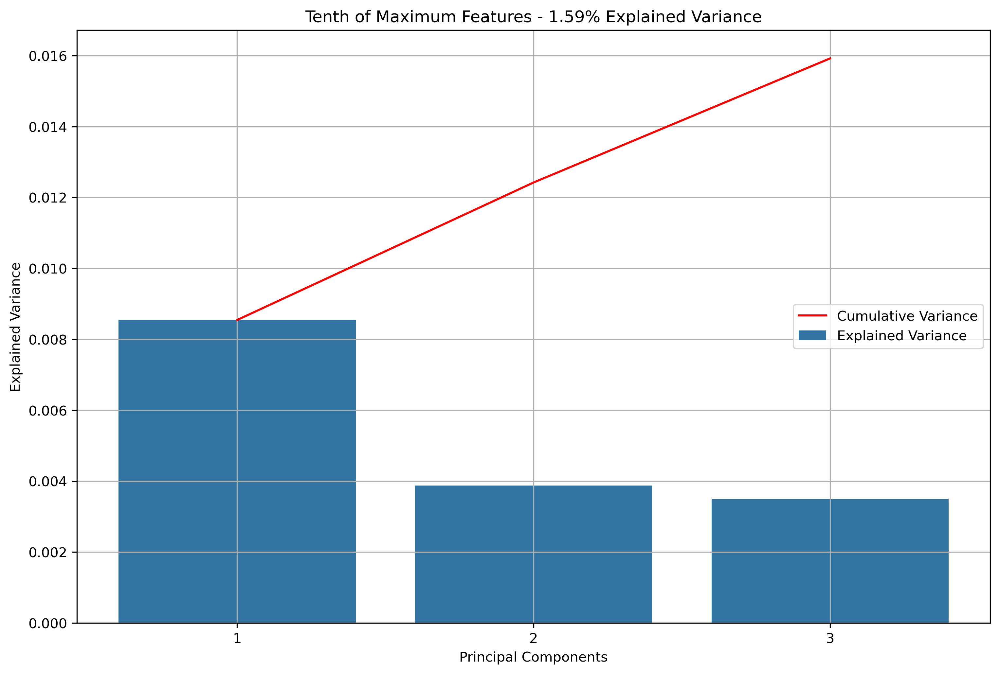
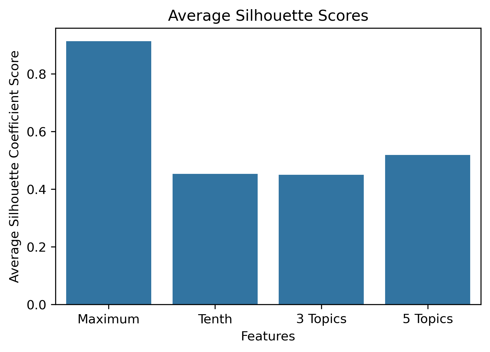
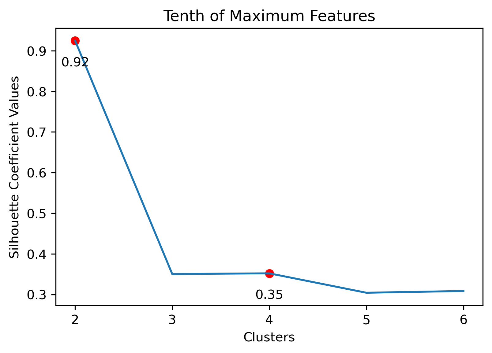

| source | url | article | source_bias | Bias Numeric | Bias Specific | author | description | date | title | search |
|---|---|---|---|---|---|---|---|---|---|---|
| Loading ITables v2.2.5 from the internet... (need help?) |
Clustering
Overview
This section will focus on clustering the text data described in Data Acquisition - NewsAPI and Data Acquisition - Reddit. As a whole, clustering is an unsupervised machine learning technique, which means that it attempts to find patterns, trends, and groupings within unlabeled data. Specifically, clustering is useful for identifying and partitioning the data through similarity measures. As such, there isn’t a candid expectation for what will be found, aside from what data is similar and what data is dissimilar. However, given the topic of student loan forgiveness has a strong divide along political party lines, politcal bias will be a subsequent point of exploration.
Strategy
Clustering Methodologies
K-Means Clustering and Hierarchical Clustering will be used to analyze news articles and Reddit posts. These are both unsupervised machine learning methods, meaning they take unlabeled data. Specifically, unlabeled numerical data.
- K-Means Clustering: A clustering algorithm with the goal of partitioning a dataset into a specified number of clusters, where each point belongs to the cluster with the nearest mean. Distance and “closeness” are usually evaluated via Euclidean Distance, as will be done with this analysis. In this scenario, each point will be a vectorized version of the text within a news article or reddit post (or subsequent aggregations). Vectorizing text data produces high dimension datasets. Using techniques based on Eucldiean Distance for high dimensionality data usually doesn’t produce great results. With that in mind, the vectorized data will be reduced via Principal Component Analysis (PCA). PCA is a data reduction technique which projects the data into an Eigenspace using a covariance matrix. The Eigenspace is built from orthonormal vectors known as Eigenvectors (or principal components) which actually represent the direction of explained variance from the original data. The strength (or magnitude) of explained variance is illustrated by the vector’s associated Eigenvalue. PCA will be used to reduce the high dimensional text data into just three principal components.
- Hiearachical Clustering: A clustering algorithm which determines cluster assignments by building a hierachy and which can be illustrated with a tree-based visualization known as a dendrogram. This is a useful exploratory tool which shows where different groups of data are partitioned, highlighting similar and disimilar data at different levels. PCA will not be used in this process. Instead, a distance measure known as Cosine Similarity will be used on the vectorized text data as a whole. The Cosine Similarity measure is adept for high dimensional data.
Distance Metrics
Euclidean Distance
Given points \(p\) and \(q\) in any real dimensional space, Euclidean Distance is calculated by:
\[d(p, q) = \sqrt{(p - q)^2}\]
Cosine Similarity
Given vectors \(x\) and \(y\) in any real dimensional space, Cosine Similarity is calculated by:
\[S_C (x, y) = \frac{x \cdot y}{||x|| \cdot ||y||}\]
Data Preparation
There will be 4 different initial vectorized versions of the text data used:
- Maximum Features: A numerical vectorized version of the entire vocabulary.
- Tenth of Maximum Features: A numerical vectorized version with a tenth of the maximum features of the entire vocabulary.
- Iterative Latent Dirichlet Allocation (LDA):
- Idea: Latent Dirichlet Allocation will be iteratively performed such that each topic will have unique words. This will begin with the words from a Tenth of Maximum features wordset, and then \(n\) unique words across \(t\) topics up to a total of \(m\) desired words will be found. In essence, \(m = t * n\).
- 3-Topic Iterative LDA with 150 Words will be used.
- 5-Topic Iterative LDA with 150 Words will be used.
- Note that a section on a proper LDA Analysis is located here.
The strategy is to begin with K-Means, find the vectorized version which produces the best results for for K-Means, and use that vectorized version to initiate Hiearchical Clustering. Since K-Means will be utilizing PCA, the dataset produced from the PCA projection will be shown for all, and then just the best vectorized versions will be shown.
NewsAPI Data
For the NewsAPI data (i.e., news articles), the data will be subset to the news sources which an overall political bias is known for, any labels will be removed, and then the vectorized versions will be created. The analysis will begin with the KMeans version, so the PCA projected data will be shown.
Data Before Transformations
NewsAPI PCA Maximum Snippet
| component_1 | component_2 | component_3 |
|---|---|---|
| Loading ITables v2.2.5 from the internet... (need help?) |
NewsAPI PCA Tenth Snippet
| component_1 | component_2 | component_3 |
|---|---|---|
| Loading ITables v2.2.5 from the internet... (need help?) |
NewsAPI PCA 3-Topic LDA Snippet
| component_1 | component_2 | component_3 |
|---|---|---|
| Loading ITables v2.2.5 from the internet... (need help?) |
NewsAPI PCA 5-Topic Iterative LDA Snippet
| component_1 | component_2 | component_3 |
|---|---|---|
| Loading ITables v2.2.5 from the internet... (need help?) |
Reddit Data
For the Reddit data, different aggregation schemas as described in the linked sections in the Overview will be used:
- Reddit Base Schema: Author’s posts within a thread are aggregated.
- Reddit Author Schema: Author’s posts across all threads are aggregated.
- Reddit Thread Schema: Posts within a thread are aggregated.
- Reddit Subreddit Schema: Threads within a Subreddit are aggregated.
For efficiency, just the snippets of the dataset which had the best K-Means clustering result will be illustrated. However, the snippets of all the versions can be found here.
Data Before Transformations
| url | title | subreddit | author | original_author | author_upvotes | author_dates | author_content | author_content_aggregated | replies_to | replies_from |
|---|---|---|---|---|---|---|---|---|---|---|
| Loading ITables v2.2.5 from the internet... (need help?) |
Reddit PCA Base Schema: 5-Topic Iterative LDA Snippet
| component_1 | component_2 | component_3 |
|---|---|---|
| Loading ITables v2.2.5 from the internet... (need help?) |
Reddit PCA Thread Schema: 3-Topic Iterative LDA Snippet
| component_1 | component_2 | component_3 |
|---|---|---|
| Loading ITables v2.2.5 from the internet... (need help?) |
Reddit PCA Subreddit Schema: 3-Topic Iterative LDA Snippet
| component_1 | component_2 | component_3 |
|---|---|---|
| Loading ITables v2.2.5 from the internet... (need help?) |
K-Means Clustering Results
Principal Component Analysis
Again, for K-Means Clusering, Principal Component Analysis (PCA) was used to reduce the text data to 3-Dimensions. The initial results show that when the maximum features were the entire vocabulary, there was a much lower amount of explained variance throughout the three principal components.
NewsAPI
Reddit Base Schema

Reddit Thread Schema
Reddit Subreddit Schema
Silhouette Coefficients
Silhouette Coefficients are a decent metric to evaluate how well K-Means clustering has performed. It measures how similar a point is to the cluster it was assigned compared to the other clusters. A coefficient value has a range from -1 to 1, where 1 indicates a great cluster assignment. It’s calculated using the average values between points. Scikit-Learn’s documentation gives a brief summary of the calculation.
- \(a\): average intra-cluster distance
- \(b\): average nearest-cluster distance
- \(s\): silhouette score
- \(S\): average silhouette score over the entire dataset
- \(n\): size of sample (number of points in the entire dataset)
\(s = \frac{b-a}{max(a, b)}\)
\(S = \frac{\sum_{i=1}^n{s}}{n}\)
NewsAPI

Reddit Base Schema


Reddit Author Schema

Reddit Thread Schema
Reddit Subreddit Schema
Choosing Cluster Values
Choosing the best combination of cluster value (k) and dataset combination took some further visualization. Although the Maximum Features (i.e., vectorized across all vocabulary, projected onto three component PCA, and then clustered with K-Means) produced some of the highest coefficient values, this was misleading. The combination resulted in a dense cluster near the origin of the principal components, with a few distant and isolated outliers. Of course the silhouette scores would be high in that case. In general, when there were a few distant and isolated outliers, a high silhouette score is misleading. Additionally, some of the lower k values (i.e., k=2 or k=3) didn’t separate the data in a meaningfuly manner after visual inspect.
Due to this, a full visual inspection of the NewsAPI clustering results will be performed including how the best clustering and dataset combination was chosen. However, the Reddit clustering results will just illustrate the best clustering and dataset combination.
NewsAPI
Potential Vectorizing and Cluster Combinations:
- Maximum Dataset: 3 clusters
- Tenth Dataset: 2 clusters or 6 clusters
- 3 Topic Iterative LDA: 4 clusters
- 5 Topic Iterative LDA: 2 or 4 clusters
Maximum Dataset with 3 Clusters
Tenth Dataset with 2 Clusters
Tenth Dataset with 6 Clusters
3 Topic Iterative LDA with 4 clusters
5 Topic Iterative LDA with 2 clusters
5 Topic Iterative LDA with 4 clusters
Choice
Given the above visualizations, the 3 Topic Iterative LDA with 4 Clusters was chosen. Although there was an outlier which had its own cluster, this version partitioned the overall cluster around the origin well. Along with this, it had a relatively high silhouette score.
A similar process was performed for the Reddit datasets, but for efficiency, just the choices will be presented. It seems that for all, the maximum features across the entire vocabular had the same result.
Reddit Base Schema
5 Topic Iterative LDA with 3 Clusters
Reddit Thread Schema
3 Topic Iterative LDA with 4 Clusters
Reddit Subreddit Schema
3 Topic Iterative LDA with 2 Clusters
Final K-Means Discussion
Overall, the Iterative LDA word sets performed well due to the outliers with higher amounts of text data, even with performing PCA. The question is, what was actually driving these splits? To better understand this, word clouds were created for the best dataset - cluster choice combinations. In general, there were splits between politics, money, and students’ and graduates’ lifestyles.
NewsAPI
Reddit Base Schema
Reddit Thread Schema

Reddit Subreddit Schema
Bringing in Labels
There was some “success” with K-Means in that it did group together different variations of word frequency combinations well. However, how did it perform on clustering political bias with the news sources?
Unfortunately, this led to highly imbalanced clusters which didn’t tend to pick up on the politcal undertones. Or, the political undertones weren’t present.
Hierarchical Clustering Results
Following the stated strategy at the beginning of this section, this analysis will start with a vectorized version of the NewsAPI 4 Topic Iterative LDA wordset. This was the dataset that was used in the reporting of the best cluster for K-Means.
NewsAPI Data
| enrollment | going | life | doge | state | forbearance | process | social | biden | repayment | congress | earnings | bankruptcy | rubin | example | make | application | graduation | buyback | class | just | term | department | forginess | act | debt | equity | right | idr | median | acceptance | work | tord | security | income | loan | sa | ll | offer | office | unirsity | school | pause | expert | time | american | home | buy | apply | democrat | policy | cnge | think | budget | official | people | program | donald | memo | like | grant | credit | business | employment | total | pslf | score | president | pay | action | don | said | available | help | balance | public | administration | drin | ratio | option | cllenge | law | plan | new | white | insurance | agency | house | college | news |
|---|---|---|---|---|---|---|---|---|---|---|---|---|---|---|---|---|---|---|---|---|---|---|---|---|---|---|---|---|---|---|---|---|---|---|---|---|---|---|---|---|---|---|---|---|---|---|---|---|---|---|---|---|---|---|---|---|---|---|---|---|---|---|---|---|---|---|---|---|---|---|---|---|---|---|---|---|---|---|---|---|---|---|---|---|---|---|---|---|---|
| Loading ITables v2.2.5 from the internet... (need help?) |
NewsAPI Clustering Results
Using the columns (words) from that dataset, the cleaned and lemmatized news articles were further reduced to only those features. These reduced articles were then saved as text files in a corpus folder for the hierarchical clustering process in R. The corpus can be found here.
After performing hiearchical clustering, the results from 2-6 levels in the hiearchical structure were saved for further analysis.
| File | cluster_2 | cluster_3 | cluster_4 | cluster_5 | cluster_6 |
|---|---|---|---|---|---|
| Loading ITables v2.2.5 from the internet... (need help?) |
NewsAPI Clustering Analysis
Given that there were a few hundred files within the corpus, it can be difficult to make sense of the initial dendrogram or results. However, if the labels are brought back in, this might help make better sense of how and why the splits are made. Political Bias was brought back in, resulting in an actual divergence among clusters according to where the majority of the labels were at. In this case, a majority of articles from sources with known political bias.
At the hiearchical level of six, there is a potential indicator that the methodology did pick up on political undertones. In fact, each of the political biases can have a unique pairing of clusters at this level. Compared to K-Means clustering, there is a much better balance overall.
By declaring these cluster pairs as seen above, the dendrogram can roughly be partitioned as such aditionally.

Reddit Extension
In an attempt to extend political bias to the Reddit text data, the NewsAPI dataset was further subset where political bias and cluster aligned, and then the different Reddit schemas were appended on for repeated clustering. To be specific, the Reddit data was reduced to the same optimal wordset and then saved into a same corpus folder as the further subset NewsAPI.
Content Distributions
To help balance the clustering process, a few changes were made due to the distributions of the document lengths between news articles and reddit posts.
Original Distribution
The following measures were taken for balancing:
- Reddit Base Schema downsized to NewsAPI Number of Articles
- Reddit Author Schema downsized to NewsAPI Number of Articles
- NewsAPI Articles aggregated by Source to better match Number of Reddit Threads and Reddit Subreddits.
Following the above measures, the corpuses were created:
- NewsAPI with Reddit Author Schema Subset
- NewsAPI Source Schema with Reddit Thread Schema Subset
- NewsAPI Source Schema with Reddit Subreddit Schema Subset
Updated Distribution
NewsAPI-Reddit Extension Clustering Analysis
Even after downsampling and aggregating, the distributions of content length of the cleaned, lemmatized, and informative versions were still far apart. Therefore, TF-IDF vectorization was performed. TF-IDF is a normalization technique which helps to mitigate the effect of document size variations. Essentially, it allocates a heavier weight towards words of higher importance rather than using counts like CountVectorizer.
After performing Hierarchical Clustering on the combined schemas, the expectation of obtaining political bias was not what was revealed. Instead, there was a bifurcation between the news articles and Reddit posts! This is apparent as early as two to three hierarchical levels.
Npte: The Reddit Base Schema wasn’t actually ran for this.
NewsAPI Source Schema with Reddit Thread Schema Subset
NewsAPI Source Schema with Reddit Subreddit Schema Subset
Due to the legibility of dendrograms, the NewsAPI Source Schema with Reddit Subreddit Schema Subset was plotted with labels altered to show their origins.

Conclusions
Two clustering techniques were performed on both news articles and reddit posts. The clustering techniques are known as K-Means Clustering and Hierarchical Clustering. These were performed as an exploratory analysis to reveal structures within the content. K-Means clustering revealed topic-like associations within the data. Regardless of source or aggregation schema, the content was mostly split among topics like politics, money, and quality of life students and graduates who are affected by student loans and tuition costs. Hierachical Clustering, on the other hand, seemed to provide more concrete details. This method provided better balanced clusters and was even able to indicate political biases. Additionally, there was evidence that this technique could distinguish between news articles and Reddit posts. Even with the text data cleaned, lemmatized, and reduced, there are certain drivers which separate the two types of writing.